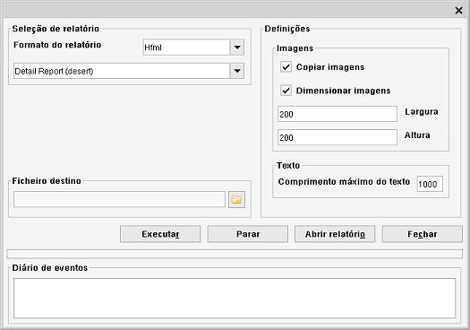

Relatórios
Caminho de menu: Ferramentas > Criar relatório
ou: clique com o botão direito nos itens selecionados na vista e selecione Criar relatório
Esta ferramenta cria relatórios em formato PDF e HTML baseados nos itens da vista.

Para criar um relatório, selecione um formato (PDF ou HTML) e um tipo de relatório da lista pendente. Selecione um
ficheiro destino e clique em "Executar" para começar a gerar o relatório.
Note que a lista pendente com os tipos de relatórios pode ser expandida com os seus próprios tipos. Os relatórios
são ficheiros XSLT (XSL Transformation) portanto tem de conhecer a sintaxe antes de poder criar os seus relatórios.
Uma boa página para começar: http://www.w3schools.com/xsl/.
Os campos que pode adicionar ao seu relatório estão todos em <pasta do data crow directory>/reports/dictionary.txt
(se este ficheiro não existir ou não tiver a certeza se está atualizado, abra e feche o diálogo de
relatórios. Isto recria o ficheiro mencionado).
Depois de ter criado o ficheiro XSLT, coloque-o em <pasta do data crow directory>/reports/<nome do módulo>
(ou em qualquer uma das suas subpastas).
Definições
Copiar imagens
Copia as imagens para uma subpasta na localização onde o relatório é gravado.
Dimensionar imagem
Esta opção só está ativa quando Copiar imagens estiver selecionada e permite aumentar ou
reduzir o tamanho da imagem. Pode indicar as novas altura e largura nos campos correspondentes.
Comprimento máximo do texto
Limita o comprimento dos textos adicionados ao relatório.
Imprimir o relatório
O Data Crow não tem nenhuma funcionalidade para imprimir os relatórios gerados. Para imprimir um ficheiro PDF
encontre um visualizador PDF gratuito para a plataforma que utiliza. Os relatórios HTML podem ser imprimidos usando o seu
navegador Web favorito.
Exemplos de relatórios